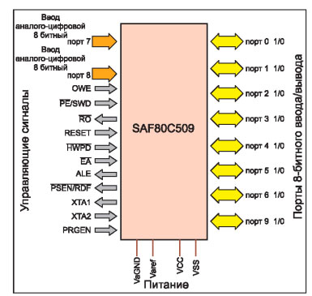
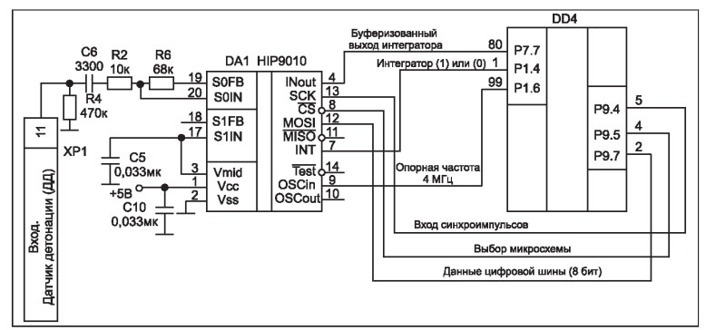

Устройство и ремонт электронных узлов системы зажигания инжекторных двигателей
Современный инжекторный двигатель наряду с механической частью имеет электронные узлы, без которых его работа невозможна. Рассмотрим работу и устройство некоторых электронных узлов системы зажигания инжекторного двигателя.
Контроллер
Основным устройством электронной системы зажигания является контроллер, еще его называют электронным блоком управления (ЭБУ).
Контроллер анализирует сигналы, полученные с различных датчиков, и управляет исполнительными механизмами системы - топливными форсунками, модулем зажигания, регулятором холостого хода,клапаном продувки адсорбера, реле управления, и другими узлами.
На примере широко используемого в автомобилях ВАЗ контроллера типа "Январь 5.1" познакомимся с его устройством и работой в составе системы зажигания автомобиля.
Конструктивно контроллер собран на печатной плате, установленной в герметичный металлический корпус.
Рис. 1. Принципиальная электрическая схема контроллера "Январь 5.1" (1/2)
Рис. 1. Принципиальная электрическая схема контроллера "Январь 5.1" (2/2)
Принципиальная электрическая схема контроллера "Январь 5.1" показана на рис. 1.
На корпусе контроллера расположен трехрядный 55-контактный соединитель ХР1.
Питание на плату контроллера подается через контакты 18 (+12 В, аккумулятор), 37 (+12 В, питание после главного реле) соединителя ХР1.
ЭБУ работает под управлением 8-битного микроконтроллера DD4 типа SAF80C509, который выполнен по технологии CMOS.

Рис. 2. Основные сигналы на микроконтроллере SAF800509
На рис. 2 показаны основные сигналы микроконтроллера SAF80C509.
Микроконтроллер питается напряжением +5 В (выв. 11, 29, 63,
89) от стабилизатора DA11 типа TLE 4267G.
В состав DD11 входят схемы защиты от короткого замыкания, повышенного входного напряжения, обратной полярности (переплю-совки) и перегрева.
В составе схемы контроллера имеются электрически стираемое постоянное запоминающее устройство (ЭСППЗУ) DD6 типа NM 24C04 и оперативное запоминающее устройство (ОЗУ) DD2 типа 29F010 (Flash-память). Связь между микроконтроллером и микросхемой DD6 обеспечивается по цифровой шине I2C.
ЭСППЗУ используется для хранения пользовательских данных, а ОЗУ - для временного хранения данных, полученных в результате измерения параметров и кодов неисправностей.
Микросхема ОЗУ являются энергонезависимой, при снятии питания данные сохраняются.
Связь между микросхемой DD2 и микроконтроллером обеспечивается по параллельной 15-разрядной шине адреса и 8-разрядной шине данных.
К выв.12,13 микроконтроллера подключен кварцевый резонатор BQ1 частотой 16 МГц, стабилизирующий частоту внутреннего генератора.
Для связи микроконтроллера DD4 с внешним электронным диагностическим устройством в ЭБУ служит специализированная микросхема DD5 типа МС33199D. Данные передаются по последовательному интерфейсу по линиям К и L стандарта ISO 9141 (выв. 13 - L-линия, выв. 55 - К-линия соединителя ХР1).
Для обеспечения работы системы зажигания инжекторного двигателя используются датчики, с помощью которых ЭБУ снимает показания работы узлов и агрегатов двигателя.
После сбора и обработки информации от датчиков контроллер
управляет исполнительными механизмами, которые отвечают за топливоподачу, систему зажигания, регулировку холостого хода, охлаждение двигателя и т.д.
На примере некоторых датчиков и исполнительных устройств познакомимся с их работой в составе системы зажигания автомобиля. Кроме того, рассмотрим их характерные отказы и порядок устранения.
Датчик детонации
Датчик детонации (ДД) пьезоэлектрического типа ОК устанавливается на блоке двигателя.
Во время возникновения детонации датчик генерирует напряжение переменного тока, амплитуда которого зависит от уровня детонации.
Датчик соединен с контроллером с помощью жгута. Сигнал с контактов 1 (сигнальный) и 2 ("земля") подается на контакты 30 и 11 соединителя ХР1 ЭБУ Для предотвращения наводок от внешних электромагнитных помех проводники жгута, подходящие к датчику, заключены в экран.
Напряжение переменного тока с датчика поступает на вход специализированной микросхемы DA1 типа HIP 9010, расположенной на плате контроллера (см. рис. 1). Микросхема фиксирует момент повышенной детонации двигателя.
Для обеспечения нормальной работы микроконтроллер DD4 производит программирование некоторых функций, таких как коэффициент усиления,характеристики полосовых фильтров и т.д.
Связь между микросхемой DA1 и микроконтроллером DD4 реализуется по цифровой шине.
Фрагмент принципиальной схемы подключения микросхемы DA1 к DD4 показан на рис. 3.

Рис. 3. Схема подключения к контроллеру датчика детонации
Для проверки состояния цепи датчика (код ошибки Р0325) следует отключить колодки от датчика и контроллера. С помощью омметра проверяют цепь на обрыв между контактами 1, 2 датчика детонации и 11, 30 контроллера соответственно.
При отсутствии нарушений в цепи датчика детонации следует заменить сам датчик и проверить контроллер.